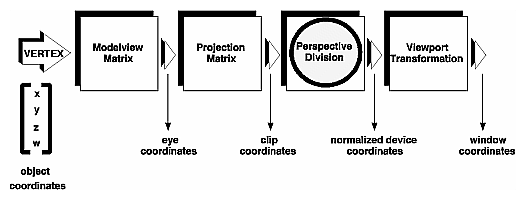
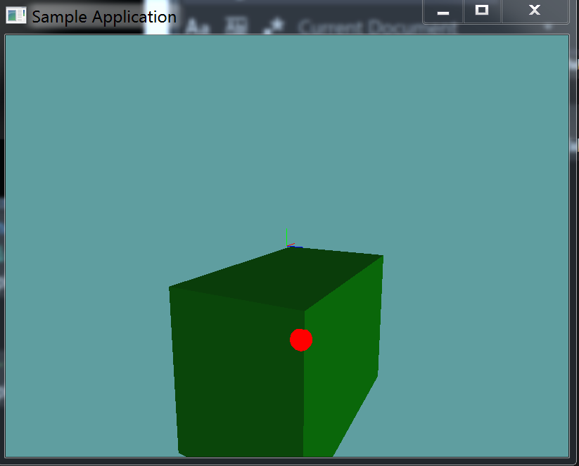

Picking
Object picking is one of those problems that's fairly easy to solve, but for some reason no one ever knows how. What is picking? Click on a 3D scene, and the object you click on gets selected. So how to we accompolish this?
The user clicks on the screen. We find the pixel they selected on the near and far clip planes of the view frustum. We use these two points to construct a ray, then we do a raycast into the world using this ray. Whatever object collides with the ray (and has the lowest t value) is the object the user clicked on!

The entire point of the OpenGL graphics pipeline is to take a world-space point and transform it to screen space coordinates. This is done using a variety of matrix multiplications. For picking we have to do the reverse! We have to take a screen space point and apply the reverse of the graphics pipeline to get two world space points.
Going from world space to screen space (What openGL does) is called Projection. Going from screen space to world space (What we need to do) is Un-Projection. Let's take a look at the projection pipeline:

Un-project
It's time to implement an "Unproject" function. I'm adding this to my Matrix4.cs file, as it is a matrix function.
The unproject function takes 4 arguments. The first one is a Vector3 that is the screen space position of the mouse. Of course, screen space mouse only has an X and a Y coordiante! What is Z used for? Z represents WHERE in space we want to get the unprojected point. A Z of 0 is the near clip plane of the camera. A Z of 1 is the far clip plane of the camera.
Next up, we take the current view and projection matrices. These are self explanatory. Finally, we take a 4 component float array that is the screen viewport. It holds the x, y, width and height of the viewport, relative to the game window. We need this to be able to normalize the mouse screen coords.
The actual unproject pipeline works like this:
- Normalize screen space X and Y
- Simply divide the offset X and Y by screen Width and height
- Transform the normalized vector into NDC Space
- NDC space is -1 to 1, not 0 to 1 like normalized space.
- Transform the NDC space vector into eye / view space
- Multiply by the inverse of the projection matrix.
- This will leave the inverse perspectiv divide in the W component
- Remember, eye space is the world as if the camera was at it's center
- Transform the eye space vector into world space
- Multiply by the inverse of the modelView matrix
- This will leave the point in proper world space
- The W component from step 3 remains unchanged
- Compensate for perspective division
- Diide the X, Y and Z components by the W component acquired in step 3
I'll provide the basic implementation here
public static Vector3 UnProject(Vector3 windowCoords, Matrix4 modelView, Matrix4 projection, float[] viewPort) {
// First, convert from window coordinates to NDC coordinates
Vector4 ndcCoords = new Vector4(windowCoords.X, windowCoords.Y, windowCoords.Z, 1.0f);
ndcCoords.X = (ndcCoords.X - viewPort[0]) / viewPort[2]; // Range 0 to 1: (windowX - viewX) / viewWidth
ndcCoords.Y = (ndcCoords.Y - viewPort[1]) / viewPort[3]; // Range 0 to 1: (windowY - viewY) / viewHeight
// Remember, NDC ranges from -1 to 1, not 0 to 1
ndcCoords.X = ndcCoords.X * 2f - 1f; // Range: -1 to 1
ndcCoords.Y = 1f - ndcCoords.Y * 2f; // Range: -1 to 1 - Flipped!
ndcCoords.Z = ndcCoords.Z * 2f - 1f; // Range: -1 to 1
// Next, from NDC space to eye / view space.
// We get here by multiplying the inverse of the projection matrix
// by NDC coords. Note, this leaves a scalar in the W component!
Vector4 eyeCoords = Matrix4.Inverse(projection) * ndcCoords;
// Next, from eye space to world space.
// Remember, eye space assumes the camera is at the center of the world,
// this is not the case, let's move the actual point into world space
Vector4 worldCoords = Matrix4.Inverse(modelView) * eyeCoords;
// Finally, undo the perspective divide!
// When we multiplied by the inverse of the projection matrix, that
// multiplication left the inverse of the perspective divide in the
// W component of the resulting vector. This could be 0
if (Math.Abs(0.0f - worldCoords.W) > 0.00001f) {
// This is the same as dividing every component by W
worldCoords *= 1.0f / worldCoords.W;
}
// Now we have a proper 4D vector with a W of 1 (or 0)
return new Vector3(worldCoords.X, worldCoords.Y, worldCoords.Z);
}
Unit test
We're going to implement a unit test that will show you how to unproject a point. Unlike previous unit tests, we will talk about excerpts of code in this one after the test is written.
Move your mouse around the screen, when it is over the cube being rendered, a red sphere should render in world space representing WHERE on the cube your mouse is:

Before we implement the unit test, i want to change the Render function of the Scene class to take a bool. This bool will determine if debug geometry is rendered or not.
public void Render(bool debug) {
RootObject.Render();
if (debug) {
GL.Disable(EnableCap.Lighting);
GL.PolygonMode(MaterialFace.FrontAndBack, PolygonMode.Line);
Octree.DebugRender();
GL.PolygonMode(MaterialFace.FrontAndBack, PolygonMode.Fill);
Octree.DebugRenderOnlyVisitedNodes();
GL.Enable(EnableCap.Lighting);
}
}
Now, onto the actual unit!
using OpenTK.Graphics.OpenGL;
using Math_Implementation;
using CollisionDetectionSelector.Primitives;
using CollisionDetectionSelector;
namespace CollisionDetectionSelector.Samples {
class SceneSample04 : Application {
Scene scene = new Scene();
OBJLoader cube = null;
Sphere debugSphere = new Sphere(new Point(), 0.5f);
Ray debugRay = new Ray();
AABB debugBox = null;
Matrix4 modelView = new Matrix4();
Matrix4 projection = new Matrix4();
float[] viewport = new float[4];
public override void Intialize(int width, int height) {
GL.Enable(EnableCap.DepthTest);
GL.Enable(EnableCap.Lighting);
GL.Enable(EnableCap.Light0);
GL.PointSize(5f);
GL.Light(LightName.Light0, LightParameter.Position, new float[] { 0.5f, -0.5f, 0.5f, 0.0f });
GL.Light(LightName.Light0, LightParameter.Ambient, new float[] { 0f, 1f, 0f, 1f });
GL.Light(LightName.Light0, LightParameter.Diffuse, new float[] { 0f, 1f, 0f, 1f });
GL.Light(LightName.Light0, LightParameter.Specular, new float[] { 1f, 1f, 1f, 1f });
scene.Initialize(7f);
cube = new OBJLoader("Assets/cube.obj");
// Because the debug AABB we are actually using for picking has no lighting
// let's actually render an OBJ in the exact position of it!
scene.RootObject.Children.Add(new OBJ(cube));
scene.RootObject.Children[0].Parent = scene.RootObject;
scene.RootObject.Children[0].Position = new Vector3(3f, -7f, -1f);
scene.RootObject.Children[0].Scale = new Vector3(7f, 5f, 4f);
// Gotta set the World space points of the debug AABB
// to the same thing as the visual node!
Matrix4 world = scene.RootObject.Children[0].WorldMatrix;
debugBox = scene.RootObject.Children[0].BoundingBox; // TEMP
Vector3 newMin = Matrix4.MultiplyPoint(world, debugBox.Min.ToVector());
Vector3 newMax = Matrix4.MultiplyPoint(world, debugBox.Max.ToVector());
// Construct the final collision box
debugBox = new AABB(new Point(newMin), new Point(newMax));
}
public override void Render() {
base.Render();
DrawOrigin();
GL.Enable(EnableCap.Lighting);
scene.Render(false);
GL.Disable(EnableCap.Lighting);
float[] rawModelView = new float[16];
GL.GetFloat(GetPName.ModelviewMatrix, rawModelView);
float[] rawProjection = new float[16];
GL.GetFloat(GetPName.ProjectionMatrix, rawProjection);
GL.GetFloat(GetPName.Viewport, viewport);
modelView = Matrix4.Transpose(new Matrix4(rawModelView));
projection = Matrix4.Transpose(new Matrix4(rawProjection));
GL.Color3(1f, 0f, 0f);
debugSphere.Render();
}
public override void Update(float deltaTime) {
// Don't rotate the scene
//base.Update(deltaTime);
float[] viewport = new float[] { 0f, 0f, Window.Width, Window.Height };
Vector3 near = Matrix4.UnProject(new Vector3(Window.Mouse.X, Window.Mouse.Y, 0.0f), modelView, projection, viewport);
Vector3 far = Matrix4.UnProject(new Vector3(Window.Mouse.X, Window.Mouse.Y, 1.0f), modelView, projection, viewport);
debugRay = new Ray(near, Vector3.Normalize(far - near));
Point p = new Point();
if (Collisions.Raycast(debugRay, debugBox, out p)) {
debugSphere.Position = p;
}
else {
// Off-screen
debugSphere.Position = new Point(-5000, -5000, -5000);
}
}
}
}
Things to note
In the above example we store the Projection matrix, ModelView matrix and Viewport as member variables:
Matrix4 modelView = new Matrix4();
Matrix4 projection = new Matrix4();
float[] viewport = new float[4];
This is because we use them in the Update function, but we can only retrieve their values in the Render function. This is how we get data from one function into the other. Let's take a quick look at how they are retrieved:
float[] rawModelView = new float[16];
GL.GetFloat(GetPName.ModelviewMatrix, rawModelView);
float[] rawProjection = new float[16];
GL.GetFloat(GetPName.ProjectionMatrix, rawProjection);
GL.GetFloat(GetPName.Viewport, viewport);
modelView = Matrix4.Transpose(new Matrix4(rawModelView));
projection = Matrix4.Transpose(new Matrix4(rawProjection));
The GL.GetFloat method can be used to retrieve indevidual floating point values or entire arrays! The matrices are pretty self explanatory. Remember, our matrices are row major, openGL's matrices are column major. We therefore need to transpose any returned matrix.
The viewport might seem like a bit of black magic, considering we don't set it that often, but in reality it's set every time the game is resized. We just so happened to implement a helper function in the base Application class to do it for us. Just to avoid repetative typing. That's the retrieved viewport.
Finally, it's worth noting, we use an overload of raycast that returns a point, not t. If we just had t we could still find the point like so:
Point hitPoint = null;
float t = -1;
bool result = Raycast(ray, aabb, out t);
if (raycast) {
hitPoint = new Point(ray.Position + ray.Normal * t);
}
else { // Not hit, ofscreen?
hitPoint = new Point(-5000, -5000, -5000);
}
The rest of the code should be self-explanatory. The only thing that might be confusing in there is why we don't render debugBox, it's because AABB's that we render have no normal. For the sample to look good we need geometry with normals. So, i just added a box to the root of the scene that's at the same position as the AABB we are raycasting against.
Note, this raycast did not go trough the Octree, adding support for octree-based picking is a fairly trivial task.